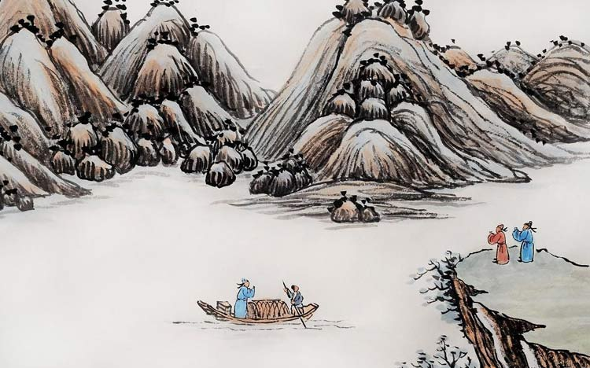

夏天是超市和路边摊上堆成山的西瓜，夏天是冰柜里五花八门的雪糕，夏天是姑娘的花裙子，夏天是在球场上挥汗如雨后的一瓶碳酸饮料，夏天是长到脚踝的碎花裙子……没有酣畅淋漓的流过汗水，就不算经过了夏天。
不管你的新衣服有没有准备好，也不管你的肥肉有没有准备好，夏天都要来了。短裤会出卖你的游泳圈、大象腿，再怎么扯着嗓子喊“不减肥就徒伤悲”也晚了。
立夏到了。立夏表示春天就要和我们说再见，炎热的夏天开始进入视线了。《逸周书·时讯解》云：“立夏之日，蝼蝈鸣。又五日，蚯蚓出。又五日，王瓜生。翻译成普通话就是说，立夏之后蝼蝈开始出来活动了，一有点风吹草动惊动了蚯蚓，蚯蚓也开始翻土，王瓜的藤蔓开始迅速攀爬生长，万物萌动的夏天就这样拉开了序幕。
在立夏的这一天，古代帝王要率文武百官到京城南郊去迎夏，举行迎夏仪式。君臣一律穿朱色礼服，配朱色玉佩，连马匹、车旗都要朱红色的，以表达对丰收的祈求和美好的愿望。江浙一带，人们因大好的春光明媚过去了，未免有惜春的伤感，故备酒食为欢，好像送人远去，名为饯春
在后世，立夏还有尝新等节日活动。如苏州有“立夏见三新”之谚，三新为樱桃、青梅、麦子，用以祭祖。在常熟，尝新的食物更为丰盛，有“九荤十三素”之说，九荤为鲫、咸蛋、螺鰤、熄鸡、腌鲜、卤虾、樱桃肉；十三素包括樱桃、梅子、麦蚕、笋、蚕豆、矛针、豌豆、黄瓜、莴笋、草头、萝卜、玫瑰、松花。
立夏之后天气逐渐转热，饮食宜清淡，应以易消化、富含维生素的食物为主，大鱼大肉和油腻辛辣的食物要少吃。立夏以后饮食原则是“春夏养阳”，养阳重在养心，养心可多喝牛奶、多吃豆制品、鸡肉、瘦肉等，既能补充营养，又起到强心的作用。总之立夏之季要养心，为安度酷暑做准备，使身体各脏腑功能正常，以达到“正气充足，邪不可干”的境界。
1、传统中医认为，人们在春夏之交要顺应天气的变化，重点关注心脏；
2、立夏之后很多地区进入雨季，雨伞或许应该成为标配啦。